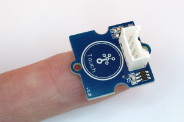
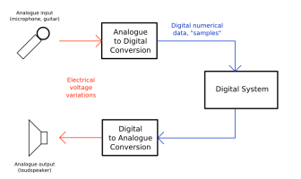

Introduction
Overview
IoT Introduction
Sensors & Data Conversion
Sensors Introduction
Data Conversion
Data Conversion Lab
Serial Comms
Serial Bus Comms
Thermistor and BME680 Temperature and Humidity Sensor
Sensors & Data Conversion
Dr Frank Walsh (WIT) & Dr Kumar Yelamarthi (CMU)
Sensors Introduction

Data Conversion

Data Conversion Lab